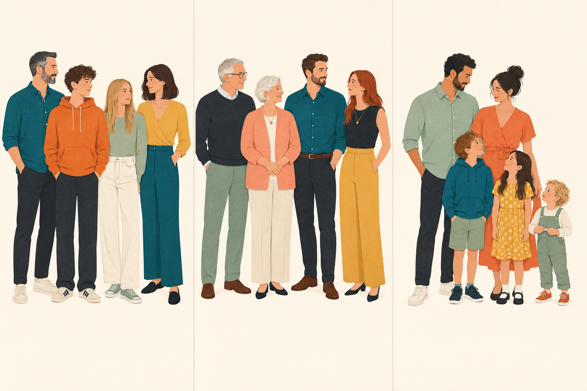
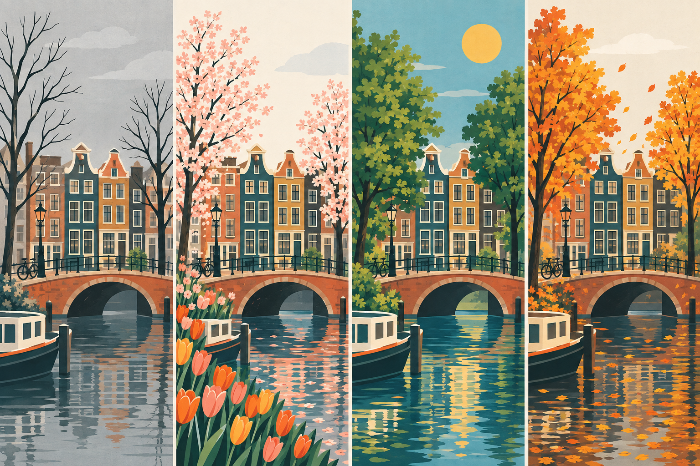

Hoofdstuk 2 · In de kantine2.4 Beschrijven van mensen
2.4 Beschrijven van mensen
describing people
Hij is jonger. Ik ben ouder. Hij is lang. Ze is klein. Ze heeft kort, blond haar. Ik heb lang, donker haar. Hij heeft een bril.
Opdracht 2
You will see photos of families. Work in pairs. Choose one person from a family.
A
Beschrijf hoe hij / zij eruitziet.
B
Vertel / fantaseer: 1 Hoe heet hij / zij? 2 Hoe oud is hij / zij?
C
Vertel / fantaseer over zijn / haar broers en zussen en ouders: 1 Wat doen ze? 2 Waar wonen ze? 3 Waar zijn ze nu (op de foto)?

acht8
Hoofdstuk 2 · In de kantine2.7 Vraagwoordvragen
2.5 Hoofdzin
Ik
kom
uit Engeland.
Ik
woon
nu
in Utrecht.
Ze
zijn
op dit moment
in Indonesië.
2.6 Ja / nee-vragen
Woon je al lang in Utrecht? Is deze plaats vrij? Krijg je nog bezoek? Zijn je ouders daar op vakantie?
2.7 Vraagwoordvragen
Wie ben jij? Wie is jonger? Hoe heet jij? Hoe laat is het? Hoeveel broers heb je? Wat is je adres? Wat doen je ouders daar? Waar woon je? Waar kom je vandaan?
Uit welk land kom je? Welke dag is het eigenlijk vandaag? Wanneer is het in jouw land zomer? Waarom zijn je ouders in Indonesië?
negen9
Hoofdstuk 2 · In de kantine2.7 Vraagwoordvragen
Opdracht 3
Fill in a question word. Look at the answer!
heet jouw zus?
Mijn zus heet Sandra.
doe je vandaag?
Ik ga naar de cursus.
woont Astrid?
Astrid woont in de Brugstraat.
cursus doe je?
Ik doe nu cursus 1.
heeft mijn boek?
Ik. Ik heb jouw boek.
laat is het?
Het is nu tien voor twee.
zijn de docenten?
De docenten zijn in de kantine.
komen uit Australië?
Peter en Alice komen uit Australië.
komt Patrick vandaan?
Patrick komt uit Maastricht.
dag is het?
Het is vandaag maandag.
Over vakantie vertelt Jeroen?
Hij vertelt over zijn zomervakantie.
Met zit je in de kantine?
Ik zit met Petra in de kantine.
is je broer in China?
Hij is daar voor zijn werk.
zussen heb je?
Ik heb twee zussen.
tien10
Hoofdstuk 2 · In de kantine2.8 Possessief pronomen
2.8 Possessief pronomen
Mijn broer komt. Komen je ouders ook op bezoek?
subject
possessief pronomen
ik
mijn broer
jij / je
jouw / je ouders
u
uw adres
hij
zijn werk
zij / ze
haar foto
wij / we
onze les ons adres
jullie
jullie docent
zij / ze
hun familie
elf11
Hoofdstuk 2 · In de kantine2.8 Possessief pronomen
Opdracht 4
Fill in a possessive pronoun.
Wij wonen nu in Zwolle. adres is Rozenstraat 8.
Ik woon in Amersfoort en zus woont in Rotterdam.
Mevrouw Jansen, gaat u met broer op vakantie?
Vera en Hilda, vertellen jullie eens over vakantie.
Dit is Farah en achternaam is Ahmany.
Herman, de docent, spreekt met buurman over de cursus.
Wij komen uit Polen en cursus begint maandag.
Edit en Ning zitten met docent in de kantine.
Theresa, woont familie ook in Nederland?
Peter moet voor werk naar Indonesië.
twaalf12
Hoofdstuk 2 · In de kantine2.9 De klok
2.9 De klok
Hoe laat is het?
11.00
Het is elf uur.
11.05
Het is vijf over elf.
11.10
Het is tien over elf.
11.15
Het is kwart over elf.
11.20
Het is tien voor half twaalf. / Het is twintig over elf.
11.25
Het is vijf voor half twaalf.
11.30
Het is half twaalf.
11.35
Het is vijf over half twaalf.
11.40
Het is tien over half twaalf. / Het is twintig voor twaalf.
11.45
Het is kwart voor twaalf.
11.50
Het is tien voor twaalf.
11.55
Het is vijf voor twaalf.
een uur
11.00-12.00
een halfuur
11.00-11.30
een kwartier
11.00-11.15
een minuut
11.00-11.01
elf uur
tien over elf
kwart over elf
half twaalf
kwart voor twaalf
vijf voor twaalf
dertien13
Hoofdstuk 2 · In de kantine2.9 De klok
Opdracht 5
Ask the person next to you.
Hoe laat is het nu?
Hoe laat begint de les?
Hoe laat stopt de les?
Hoe laat hebben we pauze?
Hoe laat ga je naar de cursus?
Opdracht 6
Your teacher will give you a worksheet.
veertien14
Hoofdstuk 2 · In de kantine2.10 De dagen van de week
2.10 De dagen van de week
dagen days
Eergisteren was het dinsdag. Gisteren was het woensdag. → Vandaag is het donderdag. Morgen is het vrijdag. Overmorgen is het zaterdag. Het is zondag. Het is maandag.
Opdracht 7
Ask the person next to you.
Welke dag is het vandaag?
Welke dag is het morgen? En overmorgen?
Welke dag was het gisteren? En eergisteren?
vijftien15
Hoofdstuk 2 · In de kantine2.11 Maanden en seizoenen
2.11 Maanden en seizoenen
maanden months
januari februari maart
april mei juni
juli augustus september
oktober november december
seizoenen seasons
de winter de lente / het voorjaar de zomer de herfst / het najaar

Opdracht 8
Ask the person next to you.
In welke maand ben je jarig?
In welke maand is niemand van de groep jarig?
Opdracht 9
Name something you associate with each month. Which is your favourite month?
zestien16
Hoofdstuk 2 · In de kantine2.11 Maanden en seizoenen
Opdracht 10Een prepositie invullen
Fill in: op, om or in.
De cursus begint maandag 8 april, 9.00 uur.
Heb jij ook les dinsdag?
De tweede cursus begint januari.
We zijn 9.45 uur in Amsterdam.
Fred is 12 augustus jarig.
Ben jij ook de zomer jarig?
Bart en Eva zijn 2017 getrouwd.
welke datum zijn ze getrouwd?
Ze zijn 7 juli getrouwd.
We gaan 10.30 uur naar de kantine.
Gerard en Senna gaan oktober op vakantie.
Hij is 23 mei 1991 geboren.
zeventien17
Hoofdstuk 2 · In de kantine2.11 Maanden en seizoenen
Opdracht 11Interviewen
A
Work in pairs. Think up questions for an interview. Use the word list, and use both types of question: the ja / nee-question and the question-word question.
B
Form new pairs. Interview each other using the questions from part A.
Opdracht 12Een tekst schrijven
Choose task A or B.
A
Schrijf een tekst bij een foto van opdracht 2.
B
Schrijf een tekst bij een foto van je familie.
achttien18
Hoofdstuk 2 · In de kantine2.12 Tekst
2.12 Tekst
Opdracht 13
Wat is dit?
a
een adres
b
een postcode
c
een telefoonnummer
1-1-2
ALS ELKE SECONDE TELT
negentien19
Hoofdstuk 2 · In de kantine2.13 Uitspraak
2.13 Uitspraak: a – aa
Opdracht 14Vocalen
You work at a dating agency — an odd one: you match people who share the same first vowel. These people are looking for a partner:
Ben Boris Roos Sara
Daan Diederik Jos Linde
Els Marcel Lotte Tim
Nina Petra Vera Walter
Ben, Boris, Daan, Diederik, Els, Jos, Linde, Lotte, Nina, Roos, Sara en Tim zoeken een partner van het andere geslacht. De rest zoekt iemand van hetzelfde geslacht.
twintig20
Hoofdstuk 2 · In de kantine2.13 Uitspraak
Opdracht 15a – aa
A
You hear two words each time. Is it the same sound (+) or a different one (–)?
+
–
1
2
3
4
5
B
You hear three words each time. Which two have the same sound?
Example
jarig
naam
dag
+
+
–
1
2
3
4
5
6
7
eenentwintig21
Hoofdstuk 2 · In de kantine2.13 Uitspraak
Opdracht 16a – aa
Listen carefully to these words and repeat them.
acht ▪ wat ▪ ander ▪ was ▪straks▪ dag ▪ half ▪ kantine ▪ land ▪ lang
jaar ▪ plaats ▪ maand ▪ naar ▪ naam ▪ dagen ▪ jarig ▪ ja ▪ vader ▪ maken
acht ▪ jaar ▪ was ▪ dagen ▪ dag ▪ plaats ▪ straks ▪ land ▪ maken ▪ vader
tweeëntwintig22
Hoofdstuk 2 · In de kantineIn de praktijk
Cultuur
Hoeveel kinderen?
Een vrouw in Nederland krijgt gemiddeld 1,7 kinderen. Hoeveel kinderen krijgt een vrouw gemiddeld in jouw land?
In de praktijk
Hoe laat is het?
Vraag iemand hoe laat het is.
drieëntwintig23
Hoofdstuk 2 · In de kantineEigen vocabulaire
Eigen vocabulaire
Eigen vocabulaire
The theme of this chapter is In de kantine.
Which words would you like to add? Write them below.
vierentwintig24
Hoofdstuk 2 · In de kantineReflectie
Reflectie
What can you do now?
Can you now understand the dialogue at the start of this chapter?